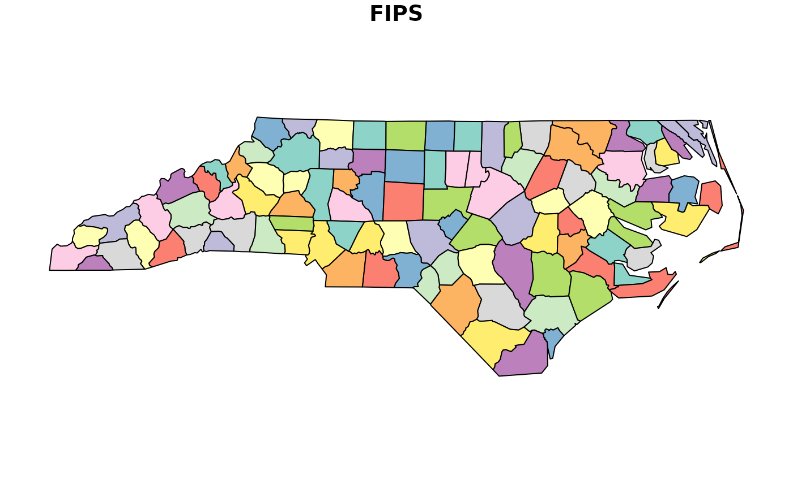
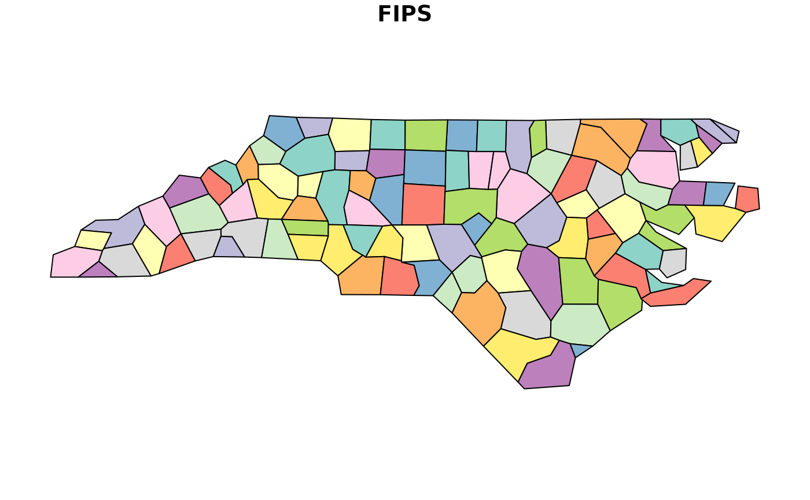
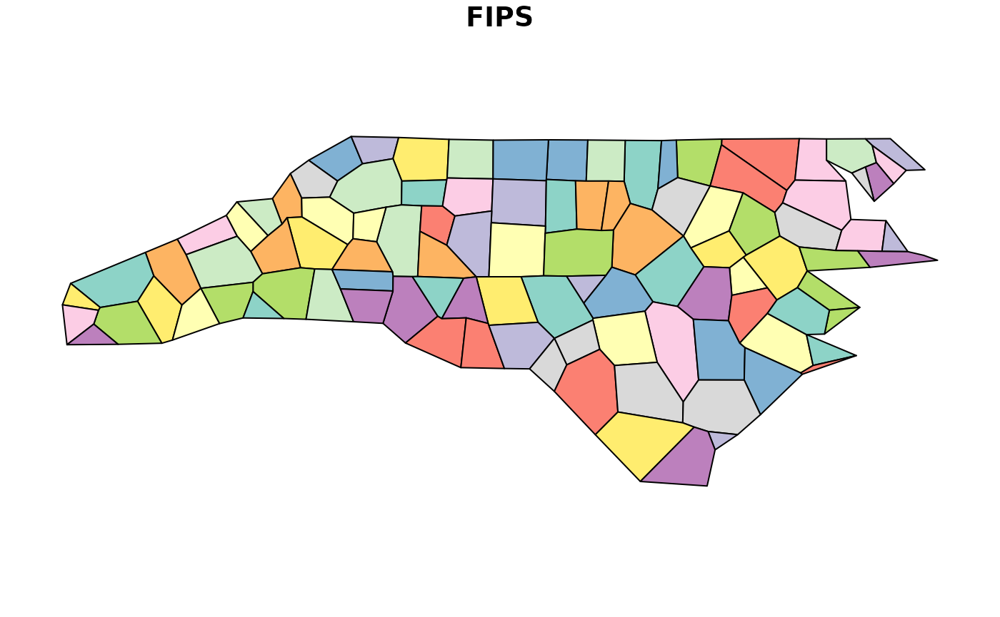
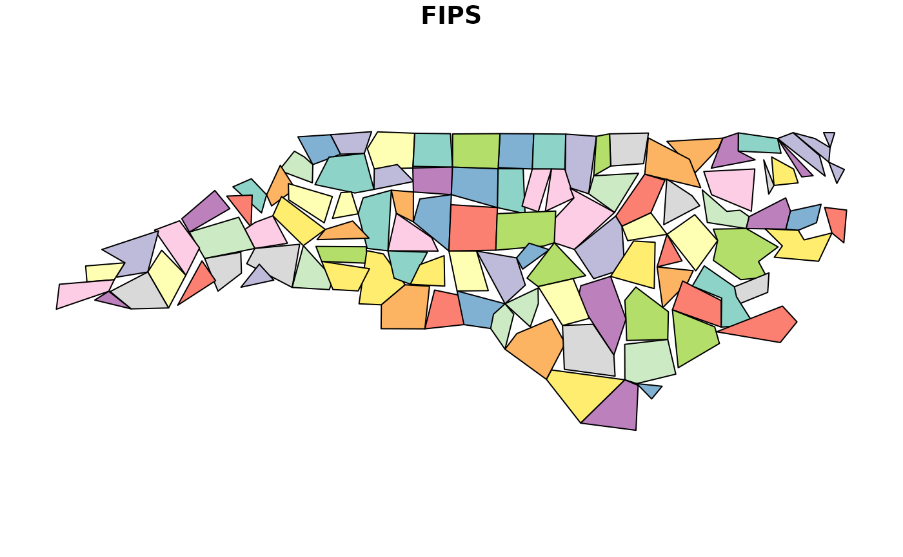
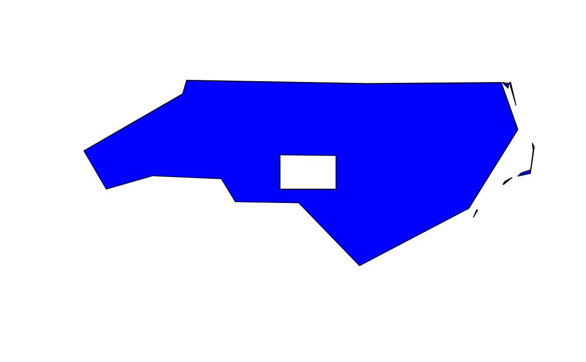

rmapshaper is a package which is an R wrapper around the awesome mapshaper tool by Matthew Bloch, which has both a Node.js command-line tool as well as an interactive web tool.
The main advantage of the package is the availability of the
topologically-aware simplification algorithm in ms_simplify
(provided by the simplify tool in mapshaper). This means
that shared boundaries between adjacent polygons are always kept intact,
with no gaps or overlaps, even at high levels of simplification. It uses
the Visvalingam
simplification method.
At this time, rmapshaper provides the following
functions:
-
ms_simplify- simplify polygons or lines -
ms_clip- clip an area out of a layer using a polygon layer or a bounding box. Works on polygons, lines, and points -
ms_erase- erase an area from a layer using a polygon layer or a bounding box. Works on polygons, lines, and points -
ms_dissolve- aggregate polygon features, optionally specifying a field to aggregate on. If no field is specified, will merge all polygons into one. -
ms_explode- convert multipart shapes to single part. Works with polygons, lines, and points. -
ms_lines- convert polygons to topological boundaries (lines) -
ms_innerlines- convert polygons to shared inner boundaries (lines) -
ms_points- create points from a polygon layer -
ms_filter_fields- Remove fields from the attributes -
ms_filter_islands- Remove small detached polygons
This short vignette focuses on simplifying polygons with the
ms_simplify function.
Usage
rmapshaper works with sf objects as well as geojson
strings (character objects of class geo_json). It also
works with Spatial classes from the sp
package, though this will likely be retired in the future; users are
encouraged to use the more modern sf package.
We will use the nc.gpkg file (North Carolina county
boundaries) from the sf package and read it in as an
sf object:
## Linking to GEOS 3.10.2, GDAL 3.4.1, PROJ 8.2.1; sf_use_s2() is TRUE
file <- system.file("gpkg/nc.gpkg", package = "sf")
nc_sf <- read_sf(file)Plot the original:
plot(nc_sf["FIPS"])
Now simplify using default parameters, then plot the simplified North Carolina counties:
nc_simp <- ms_simplify(nc_sf)
plot(nc_simp["FIPS"])
You can see that even at very high levels of simplification, the
mapshaper simplification algorithm preserves the topology, including
shared boundaries. The keep parameter specifies what
proportion of vertices to keep:
nc_very_simp <- ms_simplify(nc_sf, keep = 0.001)
plot(nc_very_simp["FIPS"])
Compare this to the output using sf::st_simplify, where
overlaps and gaps are evident:
nc_stsimp <- st_simplify(nc_sf, preserveTopology = TRUE, dTolerance = 10000) # dTolerance specified in meters
plot(nc_stsimp["FIPS"])
This time we’ll demonstrate the ms_innerlines
function:
nc_sf_innerlines <- ms_innerlines(nc_sf)
plot(nc_sf_innerlines)All of the functions are quite fast with geojson
character objects. They are slower with the sf and
Spatial classes due to internal conversion to/from json. If
you are going to do multiple operations on large sf
objects, it’s recommended to first convert to json using
geojsonsf::sf_geojson(), or
geojsonio::geojson_json(). All of the functions have the
input object as the first argument, and return the same class of object
as the input. As such, they can be chained together. For a totally
contrived example, using nc_sf as created above:
library(geojsonsf)
library(rmapshaper)
library(sf)
## First convert 'states' dataframe from geojsonsf pkg to json
nc_sf %>%
sf_geojson() |>
ms_erase(bbox = c(-80, 35, -79, 35.5)) |> # Cut a big hole in the middle
ms_dissolve() |> # Dissolve county borders
ms_simplify(keep_shapes = TRUE, explode = TRUE) |> # Simplify polygon
geojson_sf() |> # Convert to sf object
plot(col = "blue") # plot
Using the system mapshaper
Sometimes if you are dealing with a very large spatial object in R,
rmapshaper functions will take a very long time or not work
at all. As of version 0.4.0, you can make use of the system
mapshaper library if you have it installed. This will allow
you to work with very large spatial objects.
First make sure you have mapshaper installed:
If you get an error, you will need to install mapshaper. First install node (https://nodejs.org/en) and then install mapshaper in a command prompt with:
$ npm install -g mapshaperThen you can use the sys argument in any rmapshaper
function:
nc_simp_sys <- ms_simplify(nc_sf, sys = TRUE)
plot(nc_simp_sys[, "FIPS"])